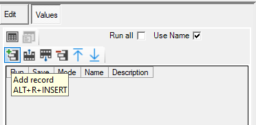
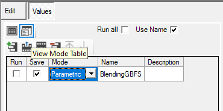
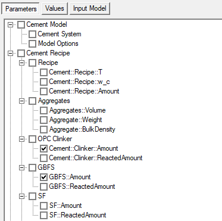
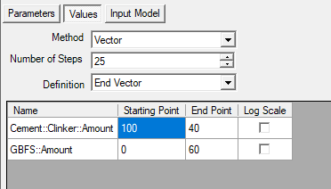
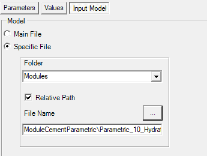
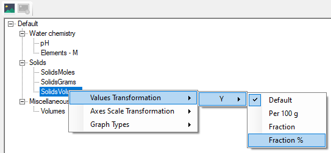
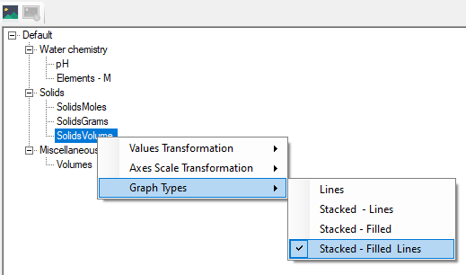
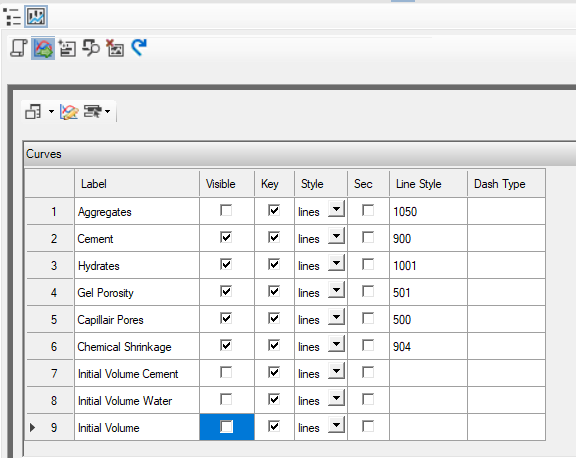
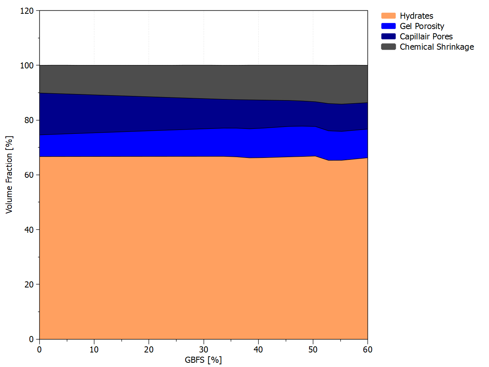

Tutorial - Blending OPC and GBFS along a reaction path (binary)
Tutorial - Blending OPC and GBFS along a reaction path
Description
Calculate the hydrates assemblage and pore water composition of the hydration of 100 g CEM-I with a water/cement ratio of 0.5 and at a temperature of 25°C when OPC is replace by GBFS up to 60%. The CEM I oxide composition is taken from the Lothenbach and Winnefeld (2006) (their table 1); the GBFS oxide composition from Adu-Amankwah et al. (2017). Calculations are done in the Ca-Si-Al/Fe-S-Mg-C-Na-K system.
You will learn to
Include a parametric study
Template - Hydrates_10_Blending_general
Depends on
Tutorial - Create Managed Project with Cement Module
Step 1 – Create the simulation from the template to blend materials
Go to Project Manager 
Select the project in the bottom panel
Go to Templates tab in the top panel
Select the template “Hydrates_10_Blending_general”
Click the “Create new from template” button 
The Metadata dialogue window opens.
Define the name of the simulation (Blending)
Click OK
The Project Manager is active again.
Select the simulation (Blending) and click Select
Step 2 – Create the reaction path of blending
Go to Global Definitions
Go to Global Variables
Add a case

Give the case a name (BlendingGBFS)
Select the Parametric Mode
Click on Select Mode ( ) icon
) icon

At the right side, the panel to define a parametric study is now visible (See Parametric Studies in online HPx manual). There are three panels:
- Parameters
- Values
- Input Model
Select the Parameters panel

The first panel Parameters serves to select the variables included in the parametric study. It consists of all numerical variables in the global input table. Only selections at the third level are relevant.
Select Cement::Clinker::Amount
Select GBFS::Amount
Select the Values panel
In this panel, the method (to obtain different parameter values) and the options relevant to the method are available.

Select Vector in Method box (See Vector in online HPx manual)
In the Vector method, one defines the start and end point of the vector (or the start point and the increment), the number of increments, and the corresponding numerical values. The vectors with variable values are calculated equally between the start and end point
Set Number of Steps to 25
Set the starting and end point of:
Cement::Clinker::Amount to, respectively 100 and 40
GBFS::Amount to, respectively 0 and 60
Select the Input Model panel
The third panel identifies the part of the code that needs to be executed with different parameter values. One option is to run the complete input file – PHREEQC will be restarted every time. Output files will be overwritten. A better way is to put the relevant code in a separate file.

Select Specific File
Select Modules from the drop down box Folder
Check Relative Path
Click …
Go to ModuleCementParametric Folder
Select Parametric_10_Hydrates.hps
Click Open
Step 3 – Set Model and Output Options
Go to the input table via the icon 
Choose model 17-Ca Si Al/fe S Mg C Na K Cl in the Cement System group of the Cement Model tab
Go to the Output Tab
For details on the different input records - See ModuleCement_Output_01_General
Type "GBFS::Amount" in Cement::Figures::Lead$ in the Figures - General group
The record GBFS::Amount defines the output variable used for the X-axis in the plots. This can be one of the (numerical) variables in the global input table. If _null_, integer values corresponding to the reaction step will be used.
Type "GBFS [%]" in Cement::Figures::X::Title$
The record Cement::Figures::X::Title$ defines the label of the X-axis.
Run 
Step 4 – Check Log and Plots
Go to the Graph Workspace 
Available default plots are listed here. The Graph Workspace allows for editing the plots - See Graph Workspace in the online HPx manual. In this tutorial, we will illustrate how to make a stacked plot with volume fraction of the hydrates and of the major phases (hydrates, water, chemical shrinkage).
Select SolidsVolume in the list of figures.
A plot is generated
Right click SolidsVolume and go to Values Transformation -> Y -> Fraction %

A plot is generated
Right click SolidsVolume and go to Graph Types -> Stacked - Filled Lines

The final plot is generated. Note that the remaining fraction (between the maximum plotted value and 100 %) represents chemical shrinkage.

Select Volumes in the list of figures.
A plot is generated
Right click Volumes and go to Graph Types -> Stacked - Filled Lines
A plot is generated
Click the Edit Graph Tool icon 
A new plot is automatically generated every time something is changed in the Edit Graph Tool. If several changes have to be made, one can disable the automatic tool generation for this specific graph.
Click the Disabling Automatic Graph Update icon  (icon change to
(icon change to  )
)
In the Edit Curve Panel  , deselect the unnecessary graphs as in the Figure below (Aggregates, Initial Volume Cement, Initial Volume Water, and Initial Volume)
, deselect the unnecessary graphs as in the Figure below (Aggregates, Initial Volume Cement, Initial Volume Water, and Initial Volume)

Click the Update the plot icon 
The plot shows the change in volume fractions of the hydrate, capillair pores, the gel pores and the chemical shrinkage as function of percentage of GBFS replacement.

END Blending OPC and GBFS along a reaction path
Created with the Personal Edition of HelpNDoc: Easy Qt Help documentation editor